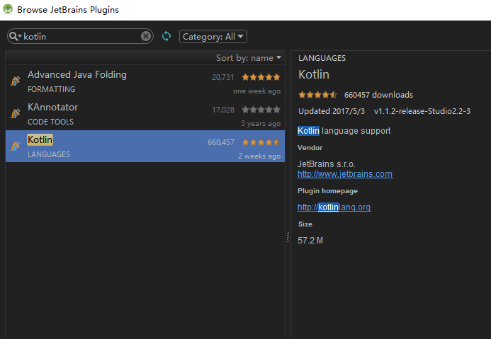
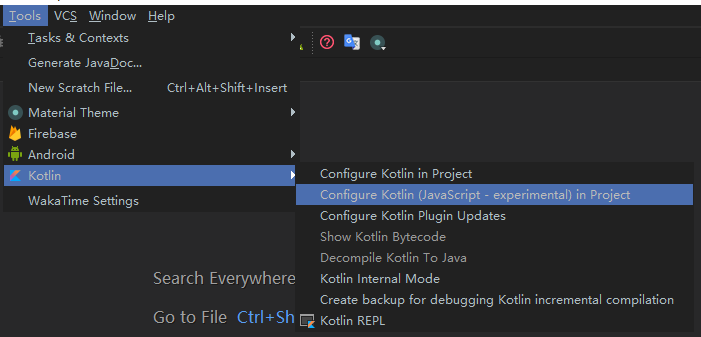
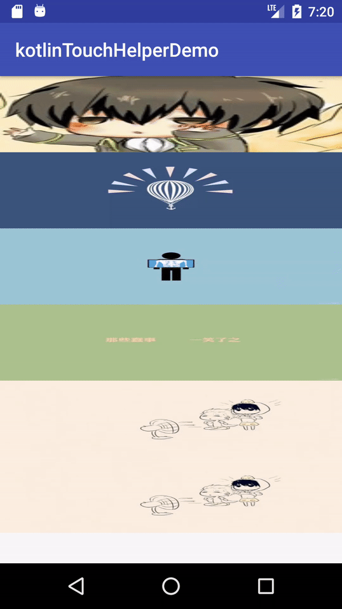

其实在一个月前就想写个kotlin的Demo，想在kotlin成为Android的主流开发语言之前学习学习它. 但是中间一直没有时间，正好这几天Google I/O大会，Kotlin都上热搜了，我利用下班后的时间将写的kotlin例子来和大家分享下，让大家感受感受这门神奇的语言.
kotlin
来，先贴上官方对于这门语言的介绍以及官方为何放弃Java而最终选择kotlin
简单介绍完了kotlin，说下小编对于这门新语言的感受吧 – 嗨到不行!
kotlin 在Android Studio 中的使用。
在最新版的AS3.0中将可以直接使用Kotlin作为开发语言，但是3.0之前版本则需要通过安装kotlin的插件来进行配置并使用kotlin。
 
下面我将通过一个功能实现，来带大家看下kotlin的代码.
列表拖拽重新排序 + 滑动删除实现原理
简述原理：主要通过使用recyclerview 提供的ItemTouchHelper 来实现效果。
app/build.gradle 配置 (此处我用的recyclerview版本是25.3.1，可以选择其他版本)
compile 'com.android.support:recyclerview-v7:25.3.1'
RecyclerView.Adapter中使用ItemTouchHelper详解：
ItemTouchHelper.Callback 来实现用户手势的控制以及数据的操作
上面只是简单的对于函数的介绍，详细的操作在下面的代码中可以了解到。
//kotlin 如果内部类需要访问外部类数据 则要声明为inner
inner class ItemDragHelperCallback : ItemTouchHelper.Callback() {
/**
* 获取可以拖动的方向标志
* */
override fun getMovementFlags(recyclerView: RecyclerView?, viewHolder: RecyclerView.ViewHolder?): Int {
//此处返回可以拖动的方向值
var swipe = 0
var move = 0
//此处为 假设recyclerview 不为空
recyclerView?.let {
if (recyclerView.layoutManager is GridLayoutManager) {
//如果是网格型 则可以左右上下都可以拖动
move = ItemTouchHelper.UP or ItemTouchHelper.DOWN or ItemTouchHelper.LEFT or ItemTouchHelper.RIGHT
} else if (recyclerView.layoutManager is LinearLayoutManager) {
//支持上下拖动
move = ItemTouchHelper.UP or ItemTouchHelper.DOWN
//左右滑动删除
swipe = ItemTouchHelper.START or ItemTouchHelper.END
}
}
return ItemTouchHelper.Callback.makeMovementFlags(move, swipe)
}
override fun onMove(recyclerView: RecyclerView?, viewHolder: RecyclerView.ViewHolder?, target: RecyclerView.ViewHolder?): Boolean {
//此处的返回值 决定是否可以拖动
if (viewHolder != null && target != null) {
//此处不让标题来进行拖动效果 也就是拖动时 标题不会动
if (viewHolder.itemViewType == TYPE_TITLE || target.itemViewType == TYPE_TITLE) {
return false
}
val fromPos = viewHolder.adapterPosition
val toPos = target.adapterPosition
//此处为mData不为空时
mData?.let {
val from = mData[fromPos]
mData.removeAt(fromPos)
mData.add(toPos, from)
//执行交换动画
notifyItemMoved(fromPos, toPos)
return true
}
}
//默认不让拖动
return false
}
override fun onSwiped(viewHolder: RecyclerView.ViewHolder?, direction: Int) {
//用于执行滑动删除
}
//不重写默认是返回true的 如果返回false的话 需要使用ItemTouchHelper的实例方法
//使用 startDrag 来执行拖拽
//使用 startSwipe 来执行滑动删除
override fun isLongPressDragEnabled(): Boolean {
return true
}
//是否支持滑动功能
override fun isItemViewSwipeEnabled(): Boolean {
return true
}
/**
* 此处用于状态变化时 更换图片状态
* */
override fun onSelectedChanged(viewHolder: RecyclerView.ViewHolder?, actionState: Int) {
super.onSelectedChanged(viewHolder, actionState)
if (actionState != ItemTouchHelper.ACTION_STATE_IDLE) {
//显示遮罩
viewHolder?.let {
if (viewHolder is ItemViewHolder) {
viewHolder.mShadow!!.visibility = View.VISIBLE
}
}
}
}
/**
* 此处当拖拽完成
* */
override fun clearView(recyclerView: RecyclerView?, viewHolder: RecyclerView.ViewHolder?) {
super.clearView(recyclerView, viewHolder)
//隐藏遮罩
viewHolder?.let {
if (viewHolder is ItemViewHolder) {
viewHolder.mShadow!!.visibility = View.GONE
}
}
}
}
//开始执行滑动
ItemTouchHelper.startSwipe(RecyclerView.ViewHolder)
//开始执行拖拽
ItemTouchHelper.startDrag(RecyclerView.ViewHolder)
//将recyclerView依附到触摸辅助类
open fun attachiToRecyclerView(recyclerView: RecyclerView) {
if (mItemTouchHelper != null && recyclerView != null) {
mItemTouchHelper.attachToRecyclerView(recyclerView)
}
}
效果图

